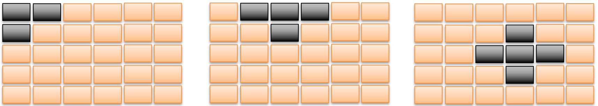
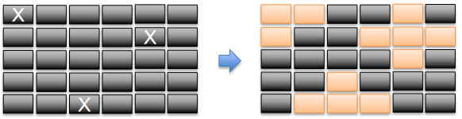
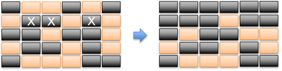
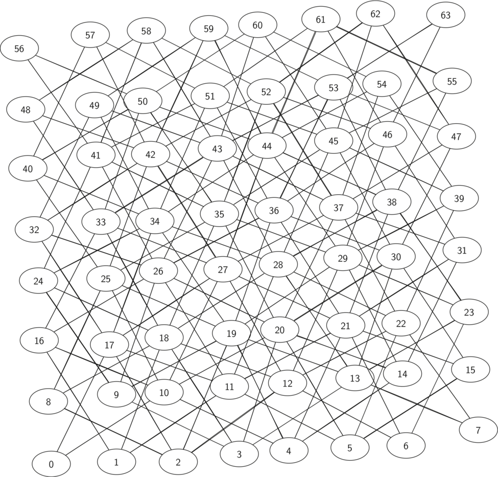

1.2. 利用计算机求解问题的基本方法和步骤¶
- 首先明确问题需求, 对问题进行分析和抽象, 建立问题的抽象模型
- 在此基础上, 确定该模型所采用的数据结构, 设计相应的方法来求解该问题
- 最后选定某种程序设计语言来编码实现
问题抽象、数据抽象、算法抽象
1.2.1. 一个简单的例子: 求任一非负实数 \(x\) 的平方根¶
- 数学定义: 满足等式 \(y\times y = x\) 的非负实数 \(y\)
- 考虑到通常计算机只能得到实数的平方根近似值, 上述问题可修改为: 对任意非负实数 \(x\), 寻找非负实数 \(y\), 使得 \(|y\times y-x|<e\), 其中 \(e\) 是给定的允许误差
- 这样就有了问题的一个严格描述. 但这个描述是说明性的, 并没有告诉如何得到这个 \(y\)
求任一正实数平方根的牛顿迭代法:
- 对给定正实数 \(x\) 和允许误差 \(e\), 令变量 \(y=x\);
- 如果 \(|y\times y-x|<e\), 计算结束, 并返回 \(y\) 作为结果;
- 取 \(z=(y+x/y)/2\);
- 将 \(z\) 作为 \(y\) 的新值, 回到步骤2.
- 首先这是一个算法, 因为它描述了一个计算过程. 只要能做实数的算术运算、求绝对值和比较大小, 就可以执行上面描述的计算过程.
- 但是, 要确定这个算法能求出正实数的平方根, 还需要证明:
- 对任意正实数 \(x\), 如果算法结束, 它一定能给出 \(x\) 的平方根的近似值;
- 对任意给定的误差 \(e\), 这个算法一定能结束.
有了上面的算法, 我们可以很容易定义一个计算平方根的 Python 函数:
1.2.2. 熄灯问题¶
1.2.2.1. 问题描述¶
- 有一个由按钮组成的矩阵, 其中每行有 6 个按钮, 共 5 行
- 每个按钮的位置上有一盏灯
- 当按下一个按钮后, 该按钮及周围(上、下、左、右)的灯都会改变一次
- 如果灯原来是点亮的, 就会被熄灭
- 如果灯原来是熄灭的, 则会被点亮  
- 与一盏灯相邻的多个按钮被按下时, 一个操作会抵消另一次操作的结果 
- 对矩阵中的每盏灯设置一个初始状态
- 写一个程序, 确定需要按下哪些按钮, 恰好使得所有的灯都熄灭
1.2.2.2. 问题分析¶
- 第2次按下同一个按钮时, 将抵消第1次按下时所产生的结果. 因此每个按钮最多只需按下一次
- 各个按钮被按下的顺序对最终的结果没有影响
- 对第1行中每盏点亮的灯, 按下第2行对应的按钮, 就可以熄灭第1行的全部灯
- 如此重复, 可以熄灭第1、2、3、4行的全部灯
1.2.2.3. 数据抽象¶
- 输入:
- 灯的状态由一个 \(5\times 6\) 的 \(0-1\) 矩阵表示
- \(0\) 表示灯的状态是熄灭的
- \(1\) 表示灯的状态是点亮的
- 灯的状态由一个 \(5\times 6\) 的 \(0-1\) 矩阵表示
- 输出:
- 需要按下的按钮由一个 \(5\times 6\) 的 \(0-1\) 矩阵表示
- \(0\) 表示不需要按对应的按钮
- \(1\) 表示需要把对应的按钮按下
- 需要按下的按钮由一个 \(5\times 6\) 的 \(0-1\) 矩阵表示
1.2.2.4. 算法设计¶
- 枚举所有可能的按钮(开关)状态,对每个状态计算一下最后灯的情况,看是否都熄灭
- 每个按钮有两种状态(按下或不按下)
- 一共有30个开关,则状态数是 \(2^{30}\), 计算量太大
- 如何减少枚举的状态数目呢? 基本思路: 如果存在某个局部,一旦这个局部的状态被确定,那么剩余其他部分的状态只能是确定的一种,或者不多的n种,则只需要枚举这个局部的状态即可
- 对于本问题, 第1行就是这样一个”局部”
- 在第1行的各个状态确定的情况下, 这些开关作用后, 将导致第1行某些灯是亮的,某些灯是灭的
- 要熄灭第1行某个亮着的灯, 则唯一的办法就是按下第2行对应的开关. 为了使第1行的灯全部熄灭, 第2行的合理开关状态就是唯一的.
- 第2行确定后, 第3行的合理开关状态也就唯一确定了. 以此类推, 最后一行的开关状态也是唯一确定的.
- 推算出最后一行的开关状态, 然后看最后一行的开关作用后,
最后一行的所有灯是否都熄灭.
- 如果是, 则这就是一个可行解得状态
- 如果不是, 则第1行换个状态重新试试
- 枚举第1行所有的状态, 共有 \(2^6\)
- 思考: 有没有状态数更少的做法?
1.2.3. 骑士周游问题 (The Knight’s Tour Problem)¶
1.2.3.1. 问题描述¶
国际象棋的棋盘为 \(8*8\) 的方格棋盘, 现将“马”放在任意指定的方格中, 按照“马”走棋的规则将“马”进行移动. 要求每个方格只能进入一次, 最终使得“马”走遍棋盘64个方格.

1.2.3.2. 数据抽象: 图结构¶

1.2.3.3. 算法设计: 图的深度优先遍历¶
- 从图 \(G\) 中任一顶点 \(V\) 出发, 访问该顶点, 并将其标记为已访问
- 依次访问与 \(V\) 相邻的未被访问过的顶点 \(W\), 从 \(W\) 出发继续进行深度优先遍历
- 重复上述操作, 直到 \(G\) 中所有顶点都被访问过